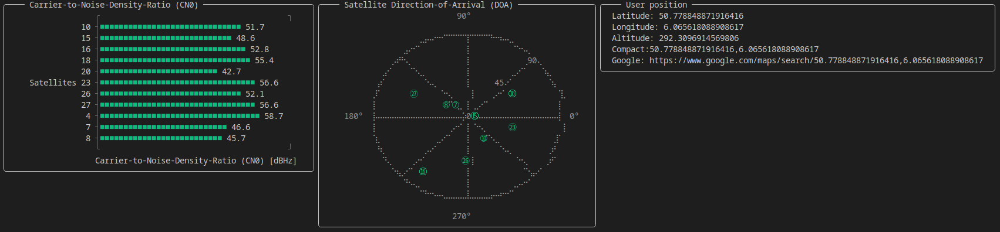

Graphical User Interface
GNSSReceiver.jl ships a live terminal GUI that redraws in place as the receiver processes samples. It shows three panels:
- Carrier-to-Noise-Density Ratio (CN0) — a bar per tracked satellite, coloured green when the satellite is healthy and red otherwise.
- Satellite Direction-of-Arrival — a sky plot of the satellites in view.
- User position — latitude/longitude/altitude and a ready-to-click Google Maps link.

Launching the GUI
Live from an SDR
The simplest path is gnss_receiver_gui, which opens the device, runs the pipeline and blocks on the GUI until the run finishes:
using SoapyRTLSDR_jll
using GNSSReceiver, GNSSSignals, Tracking, SoapySDR, Unitful
gnss_receiver_gui(;
system = GPSL1CA(),
sampling_freq = 2e6u"Hz",
acquisition_time = 4u"ms",
run_time = 40u"s",
num_ants = Tracking.NumAnts(1),
dev_args = first(Devices()),
)From a data channel
If you already have a data channel from receive (from a file, say), wrap it with get_gui_data_channel and pass the result to gui. get_gui_data_channel down-samples the per-chunk stream to a human refresh rate:
using GNSSReceiver, GNSSSignals, Unitful
measurement_channel = read_uint8_iq_file("RTLSDR_Bands-L1.uint8",
Int(upreferred(2.048e6u"Hz" * 4u"ms")))
data_channel = receive(measurement_channel, GPSL1CA(), 2.048e6u"Hz"; max_meas = 2^7)
gui_channel = get_gui_data_channel(data_channel)
GNSSReceiver.gui(gui_channel)Showing the GUI and saving the data
The GUI is just one consumer of the data channel. To display it and persist the run, split the channel with tee and give each branch its own consumer:
using PipeChannels: tee
data_channel1, data_channel2 = tee(data_channel)
data_task = @async save_data(data_channel1; filename = "run.jld2")
gui_channel = get_gui_data_channel(data_channel2)
GNSSReceiver.gui(gui_channel)
fetch(data_task)Customising the display
gui accepts an io argument and a construct_gui_panels function, so you can render to a different stream or lay the panels out differently. See the docstrings for get_gui_data_channel and gui in the API Reference.